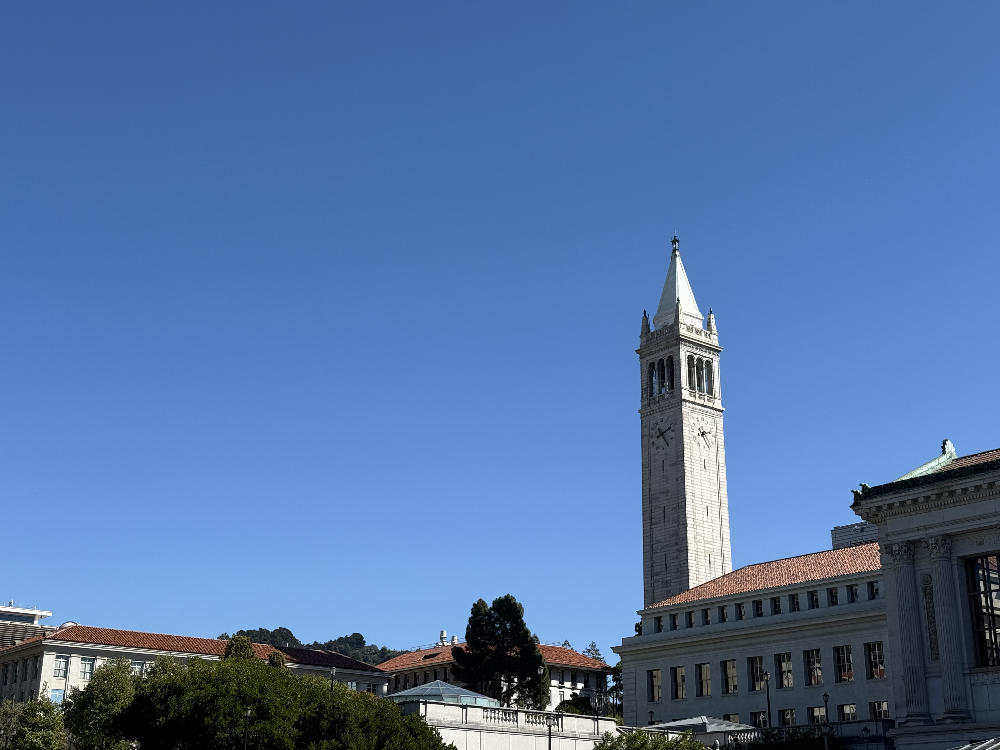
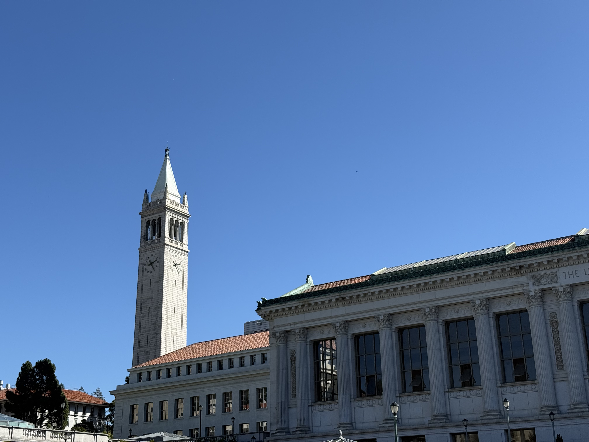

Ethan Lau
Shown below is four sets of images that are projective, done through a fixed center of projection and rotation.
A homography matrix is a 3x3 matrix that maps one set of points on a planar surface to another, relating two different views of our 3D world into a 2D perspective transformation. This is done through the following matrix-vector formulation. $$w \begin{bmatrix} x^{'} \\ y^{'} \\ 1 \end{bmatrix} = \begin{bmatrix} a & b & c \\ d & e & f \\ g & h & 1 \end{bmatrix} \begin{bmatrix} x \\ y \\ 1 \end{bmatrix} $$ Given a sample of at least four points from the source image to the destination image, we are able to recover the homography matrix. Given at more than four points, we transform the matrix into a least-squares problem.
Expanding our matrix-vector formulation, we find that: $$wx^{'} = ax + by + c$$ $$wy^{'} = dx + ey + f$$ $$w = gx + hy + 1$$ Substituting for w, we find: $$x^{'}(gx + hy + 1) = ax + by + c$$ $$y^{'}(gx + hy + 1) = dx + ey + f$$ Formatting this relation using multiple points and in matrix-vector form, we find: $$ \begin{bmatrix} x & y & 1 & 0 & 0 & 0 & -xx^{'} & -yx^{'} \\ 0 & 0 & 0 & x & y & 1 & -xy^{'} & -yy^{'} \\ &&&&\vdots \end{bmatrix} \begin{bmatrix} a \\ b \\ \vdots \\ h \end{bmatrix} \approx \begin{bmatrix} x^{'} \\ y^{'} \\ \vdots \\ \end{bmatrix} $$ where each set of two rows of the design matrix and the resultant vector are substituted with the i'th set of corresponding sample points. Since this may be an overdetermined system, least-squares is performed on this relation. Shown below is this process shown on an example set of images.
The points shown in the image above is $$[1404,2188], [1536,2375], [1988,2344], [2401,2199], [2822,2171], [1387,3991], [2383,4282]$$ and $$[717,1780], [872,1976], [1360,1936], [1782,1763], [2210,1736], [843,3657], [1855,3830]$$ respectively. The recovered homography matrix was $$ \begin{bmatrix} 1.34892130e+00 & 1.32115400e-01 & -1.34974340e+03 \\ 6.96226753e-02 & 1.37251456e+00 & -1.02399236e+03\\ 5.30424109e-05 & 4.28983174e-05 & 1.00000000e+00 \end{bmatrix} $$
Given a bounding box of an image (which can be determined using a forward transformation of your original image's corners using a homography matrix), there exist at least two options for recovering your transformed image.
One approach uses a nearest neighbor approximation. When the bounding box is reversed-mapped back to the original image, it takes the color of the nearest pixel. Another approach uses bilinear interpolation, where the 4 nearest integer indices are weighted by the area of the rectangle defined by the opposing index and the reversed-mapped point. The results of both nearest-neighbor and bilinear interpolation are shown below.
While the bilinear approach was more color-accurate with less artifacts, the approach can take a measurable longer amount of time. And while a vectorized approach did significantly speed up the algorithm, the use of nearest-neighbor is optimal if speed is a concern.
Given a set of point correspondences to determine a homography matrix, a mosaic can be constructed. Listed below are constructed mosaics with blending weighted by their distance from the original image center.


Harris Corner Detection is a corner detection operator used to find features within an image. After detecting all Harris Corners, we use Adaptive Non-Maximal Suppression to select a subset of features that are locally strong. We define the supression radius of a non-maximal point as: $$r_i = \min_{j}{|x - x_j|} \text{ s.t. } f(x_i) < c_{robust}f(x_j)$$ where points lower radii are supressed. Shown below is harris detection with and without ANMS.
Using a 40x40 area around the selected point, we create a normalized 8x8 feature descriptor for automatic feature matching. Shown below is a sample of 4 features:
Given a set of points given by ANMS and extracted using the feature descriptor, we determine the euclidian distance between each feature descriptor. We then rank the pairings using Lowe thresholding, which takes the ratio between the best and second best matching euclidian distance. We use this ranking to determine best feature pairings. Shown below is a pairing on a set of two images.

RANSAC also known as Random Sample Consensus relies on the fact that the majority of correspondences from feature matching are correct. We then can then repeatedly sample 4-points and create a homography. We then check whether the majority of feature correspondences match the predicted homography. We take the homography with the most number of inliers and recompute the homography matrix based on the "majority correspondence." Shown below is automatic stiching using RANSAC on feature matching: